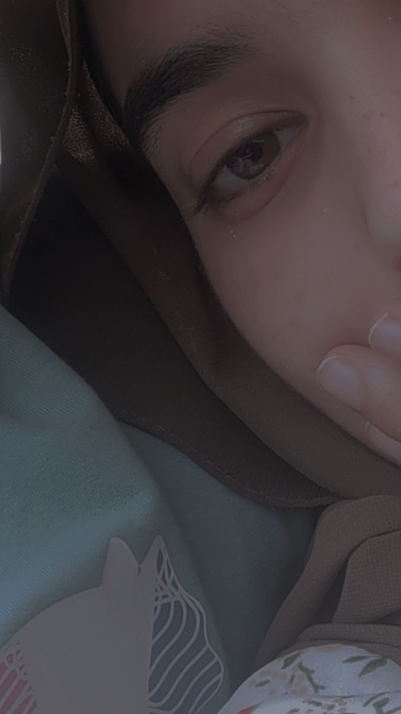
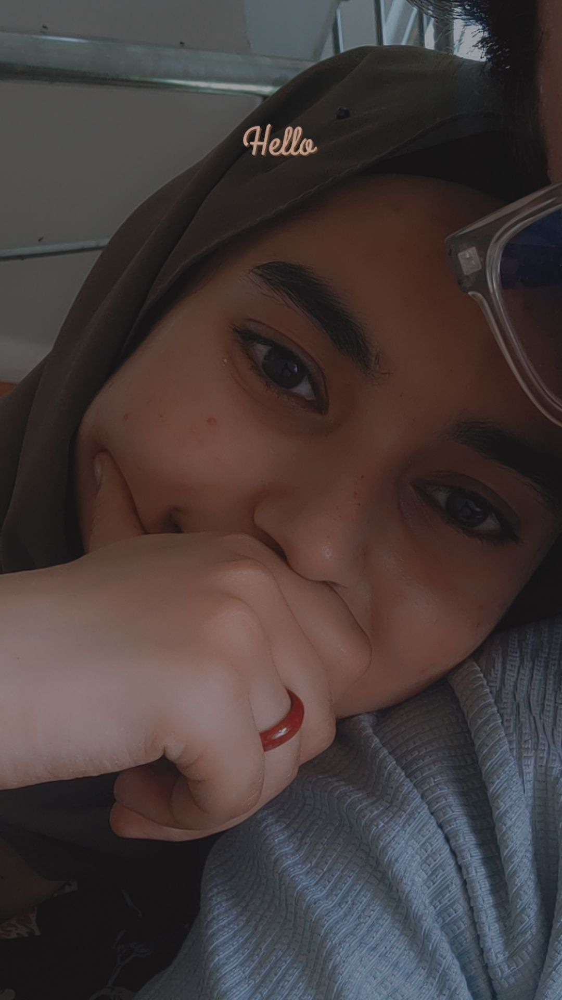
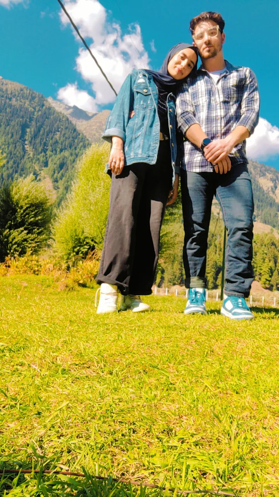

Please enter the access code to unlock your surprise.
The day it all began.

The day it all began.

Home

The Realization
The Big Step
Happy Birthday, My Everything!
To the person who fills my life with endless joy, laughter, and love. Every moment with you is a precious gift. I hope your day is as beautiful and radiant as you are.